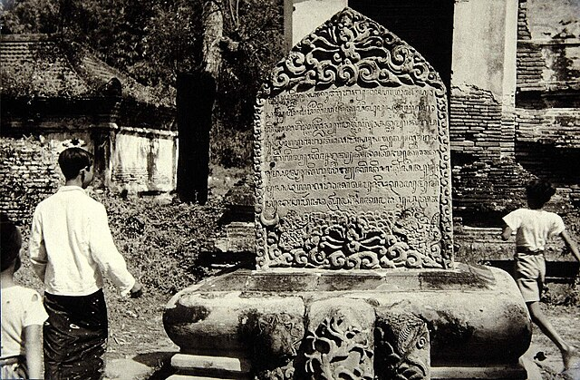
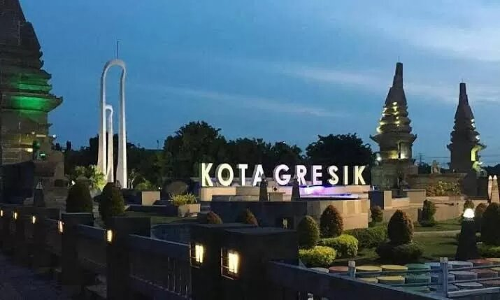
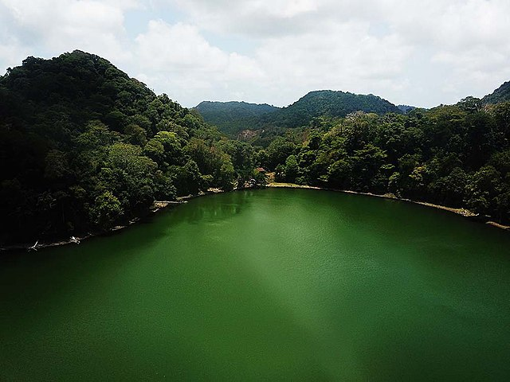
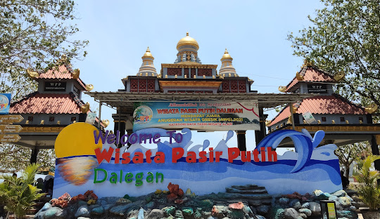
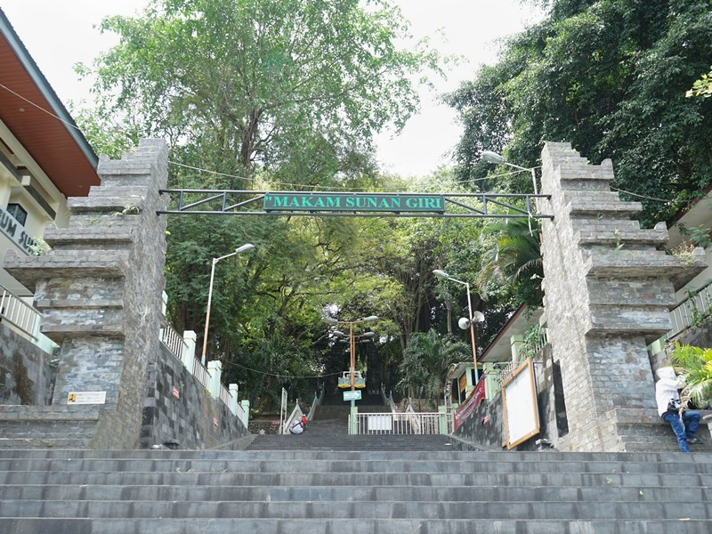

Sejarah

Gresik telah dikenal sejak abad ke-11 sebagai pusat perdagangan internasional yang dikunjungi pedagang dari Cina, Arab, Gujarat, dan wilayah lain.
Kota ini mulai menonjol dalam sejarah dengan berkembangnya Islam di Jawa, diawali oleh Syech Maulana Malik Ibrahim pada awal abad ke-11.
Perkembangan Gresik juga dipengaruhi oleh Nyai Ageng Pinatih, seorang syahbandar kaya yang menemukan bayi asal Blambangan, Jaka Samudra.
Bayi ini tumbuh menjadi Sunan Giri, tokoh Wali Songo dan penguasa Giri Kedaton, yang memimpin Gresik mulai 1487 M. Tahun tersebut dijadikan sebagai hari lahirnya kota Gresik.
Kota ini juga terkenal sebagai "Kota Wali" karena peran Sunan Giri dan Syech Maulana Malik Ibrahim dalam penyebaran Islam.
Banyak pondok pesantren, madrasah, dan kerajinan Islami, seperti kopyah dan mukenah, berkembang di sini. Pada 1974, nama Kabupaten Surabaya diganti menjadi Kabupaten Gresik, yang menjadi pusat kegiatan wilayah.
Gresik merupakan bagian dari pengembangan Gerbangkertosusila (Gresik, Bangkalan, Surabaya, Sidoarjo, Lamongan) dan berfokus pada pertanian, industri, perdagangan, dan pariwisata.
Dengan industrinya yang maju, Gresik kini dikenal hingga mancanegara.
Geografi

Kabupaten Gresik terletak di sebelah barat laut Kota Surabaya, ibu kota Provinsi Jawa Timur, dengan luas wilayah 1.191,25 km².
Wilayah ini terbagi menjadi 18 kecamatan, 330 desa, dan 26 kelurahan. Secara geografis, Gresik berada di antara 112°-113° Bujur Timur dan 7°-8° Lintang Selatan.
Sebagian besar wilayahnya merupakan dataran rendah dengan ketinggian 2-12 meter di atas permukaan laut, kecuali Kecamatan Panceng yang mencapai 25 meter.
Sebagian besar wilayah Gresik merupakan daerah pesisir pantai, mencakup Kecamatan Kebomas, Gresik, Manyar, Bungah, Sidayu, Ujungpangkah, Panceng, serta Kecamatan Sangkapura dan Tambak yang terletak di Pulau Bawean.
Batas wilayah Gresik adalah Laut Jawa di utara, Selat Madura dan Kota Surabaya di timur, Kabupaten Sidoarjo dan Kabupaten Mojokerto di selatan, serta Kabupaten Lamongan di barat.
Pariwisata Kabupaten Gresik
Kabupaten Gresik menawarkan beragam destinasi wisata menarik, mulai dari keindahan alam, wisata religi, hingga tradisi budaya yang khas.
Berikut adalah beberapa pilihan wisata yang dapat dinikmati:
1. Wisata Alam
a. Pulau Bawean

Danau Katsoba
Pulau Bawean adalah salah satu destinasi wisata yang terletak di Kabupaten Gresik. Pulau ini menawarkan berbagai tujuan menarik, seperti Noko Gili, Pantai Bayangkara, Pantai Tanjunggaang, Pulau Cina, Pantai Selayar, Danau Kastoba, dan banyak lagi.
b. Pantai Pasir Putih, Dalegan

Pantai Pasir Putih
Pantai ini berlokasi di Desa Dalegan, Kecamatan Panceng, sekitar 40 km dari pusat Kabupaten Gresik.
Dibuka untuk umum sejak 2003, pantai ini menjadi destinasi ideal untuk menikmati keindahan pantai, mengikuti lomba perahu, atau memancing.
Setiap bulan Agustus, pantai ini juga menjadi tuan rumah berbagai atraksi wisata, termasuk perlombaan yang bertema wisata bahari.
2. Wisata Ziarah

Makam Sunan giri
Kabupaten Gresik memiliki berbagai destinasi wisata ziarah yang sarat dengan nilai sejarah dan religius.
Berikut adalah beberapa tempat yang dapat dikunjungi:
- Makam Fatimah binti Maimun: Terletak di Desa Leran, Kecamatan Manyar, makam ini dikenal sebagai salah satu situs Islam tertua di Indonesia.
- Makam Maulana Malik Ibrahim (Sunan Gresik): Berada di Desa Gapurosukolilo, Kecamatan Gresik, makam ini menjadi salah satu destinasi utama wisata ziarah.
- Makam Sunan Gisik (Raden Santri): Berlokasi di Kelurahan Bedilan, Kecamatan Gresik, tempat ini merupakan makam pelopor penyebaran Islam di Madura dan Bima.
- Makam Sunan Giri: Terletak di Desa Giri, Kecamatan Kebomas, makam ini menjadi tempat berziarah bagi banyak orang dari berbagai daerah.
- Makam Sunan Prapen: Berada di Desa Klangonan, Kecamatan Kebomas, makam ini merupakan peristirahatan cucu Sunan Giri yang berperan penting dalam penyebaran Islam
- Makam Kanjeng Sepuh: Lokasinya di Desa Kauman, Kecamatan Sidayu, makam ini menjadi tempat ziarah yang banyak dikunjungi.
- Makam Habib Alwi bin Muhammad Hasyim Assegaf: Terletak di Kelurahan Kauman, Kecamatan Gresik, makam ini memiliki nilai historis dan religius yang tinggi.
- Makam Habib Abu Bakar bin Muhammad Umar Assegaf: Juga berlokasi di Kelurahan Kauman, tempat ini menjadi tujuan ziarah bagi umat Islam.
- Makam KH. Zubair: Berada di TPI Tlogopojok, Kelurahan Tlogopojok, Kecamatan Gresik, makam ini merupakan peristirahatan tokoh penting dalam sejarah PBNU.
- Giri Kedaton: Berlokasi di Kelurahan Sidomukti, Kecamatan Kebomas, tempat ini adalah peninggalan sejarah yang memiliki daya tarik tersendiri.
Wisata Tradisi
 Benteng Lodewijk dan Exotic Mengare
Benteng Lodewijk dan Exotic Mengare
Kabupaten Gresik memiliki berbagai tradisi yang telah berlangsung sejak lama dan tetap dilestarikan hingga saat ini.
Beberapa tradisi khas yang menjadi bagian dari budaya lokal meliputi Padusan, Kolak Ayam Sangring, Malem Selawe, Pasar Bandeng, Kupatan, Rebo Wekasan, dan Barikan.
Tradisi-tradisi ini tidak hanya menjadi warisan budaya, tetapi juga daya tarik bagi wisatawan yang ingin merasakan kearifan lokal Gresik.
Selain tradisi, Kabupaten Gresik juga memiliki banyak peninggalan sejarah yang bernilai sebagai pusaka budaya.
Komunitas Mataseger aktif dalam pelestarian situs-situs bersejarah ini dan berperan penting dalam lahirnya Peraturan Daerah Cagar Budaya Nomor 27 Tahun 2011.
Berikut beberapa situs sejarah yang ada di Gresik:
- Gresik Kota Lama: Kawasan dengan ratusan bangunan kuno yang menyebar di sekitar Kota Lama.
- Benteng Lodewijk Mengare: Sebuah benteng bersejarah yang menjadi saksi perjalanan masa lalu Gresik.
- Situs Gosari: Peninggalan arkeologi yang menyimpan banyak cerita sejarah.
- Situs Kanjeng Sepuh: Situs bersejarah yang memiliki nilai spiritual dan historis yang tinggi.